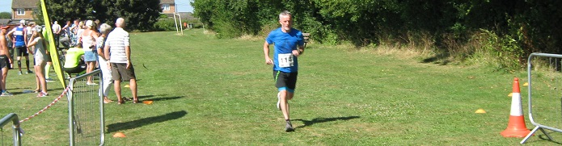

Four pioneering SAC members tried out the new 10k race at East Peckham, near Paddock Wood, on 5th August. The course on quiet rural roads has no notable hills, so good times should be possible on a cool day. Not this year though, although there were welcome patches of shade and two water stations. Location and organisation were great, but they'll need more toilets if they start to get bigger fields!
Graham Dwyer led the SAC runners home and was first M45. The SAC results were:
| Pos | Gun Time | Chip Time | First Name | Surname | Club | Race No | Category | Cat Pos | Gen Pos | Gender |
|---|---|---|---|---|---|---|---|---|---|---|
| 27 | 00:44:32 | 00:44:27 | Graham | Dwyer | Sevenoaks AC | 63 | Male Vet 45 | 1 | 23 | M |
| 50 | 00:48:08 | 00:48:02 | Simon | Hallpike | Sevenoaks AC | 77 | Male Vet 65 | 2 | 42 | M |
| 79 | 00:52:53 | 00:52:43 | Neil | Haggertay | Sevenoaks AC | 114 | Male Vet 55 | 6 | 65 | M |
| 101 | 00:57:00 | 00:56:50 | Lionel | Stielow | Sevenoaks AC | 51 | Male Vet 65 | 5 | 79 | M |
The full results are here.
